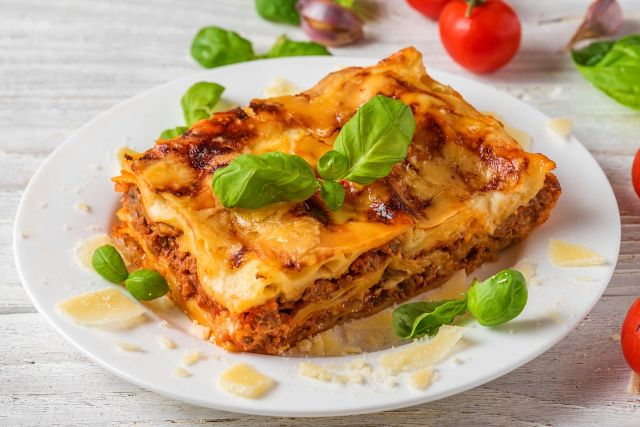

Back to Home
Lasagna

Description
Lasagna is a classic Italian dish made with layers of pasta, rich meat sauce, and creamy cheese. Baked to perfection, it is a comfort food favorite.
Ingredients
- Lasagna noodles
- Ground beef
- Tomato sauce
- Ricotta cheese
- Mozzarella cheese
- Parmesan cheese
- Garlic
- Onion
- Italian seasoning
Steps
- Preheat oven to 375°F.
- Cook lasagna noodles according to package instructions.
- Brown ground beef with garlic and onion.
- Add tomato sauce and Italian seasoning to the meat.
- Layer noodles, meat sauce, and cheeses in a baking dish.
- Bake for 45 minutes.
- Let cool before serving.